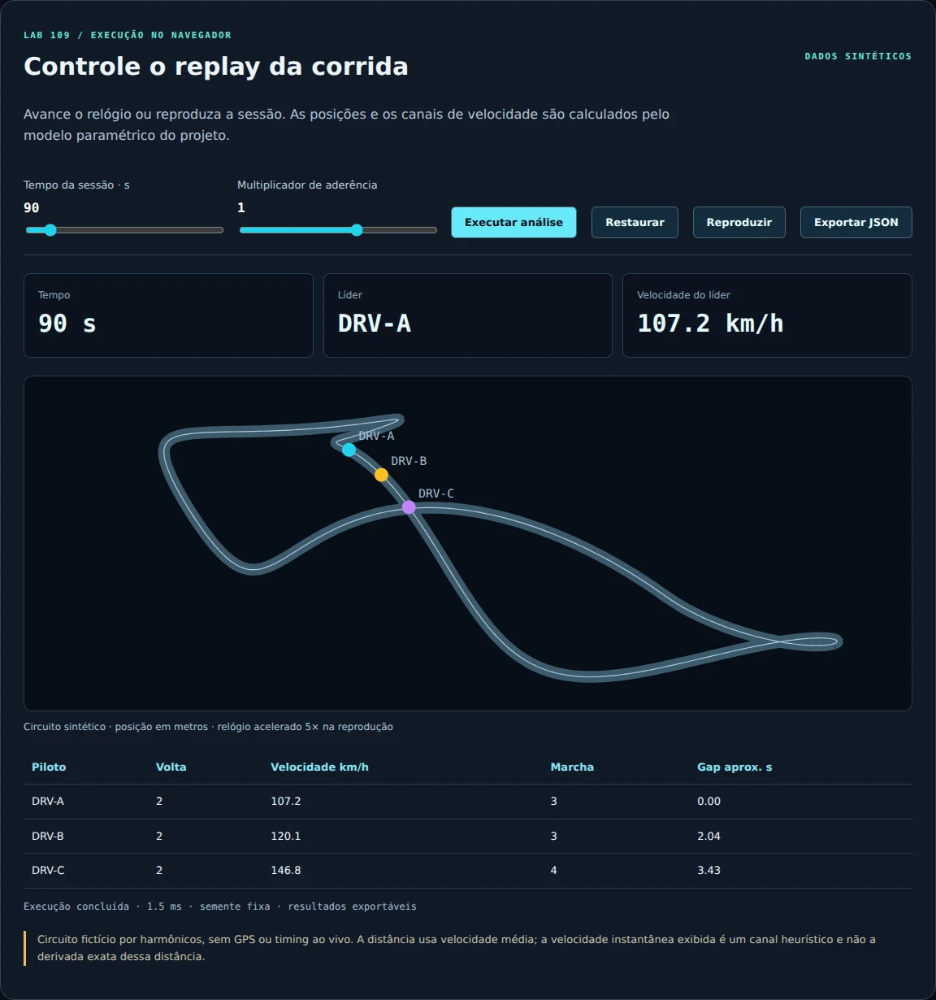

Fórmula 1 · Projeto #109
Replay de corrida
Escolha um piloto, explore a pista e conecte cada movimento aos dados. GP do Bahrein 2024, três pilotos, recorte de quatro minutos (OpenF1).
01 / Track explorer
Uma pista. Três perspectivas.
Pausado01:30.0
SelecionadoDrv-aVolta 02
Arraste para mover · role para aproximar
02 / Data explorer
O que acontece em cada segundo.
Variação de velocidade
m/s²Derivada numérica da velocidade observada · piloto selecionado
Passe o cursor para inspecionar os valores. Clique em um gráfico para posicionar o replay naquele instante.
Preparando sessão…
03 / Under the hood
Explorar. Entender.
Reproduzir.
Esta interface reproduz um recorte de dados históricos reais. Posições, classificação e gráficos são calculados a partir do mesmo instante da sessão.
Origem dos dados e limites
Dados reais de VER, PER e SAI no GP do Bahrain de 2024. Recorte de quatro minutos, não a corrida inteira. Velocidade, marcha, posição e classificação vêm do OpenF1, alinhados por UTC. A trajetória é aproximada e não constitui levantamento topográfico.
A posição usa a última amostra disponível; a aceleração é uma derivada numérica da velocidade, não uma leitura de acelerômetro. Não são inventados gaps ou valores de aderência.
Executar o projeto Python
python -m pip install -r requirements-real-f1.txt python scripts/collect_f1_real.pyCódigo e metodologia no GitHub ↗
Captura da análise com dados históricos reais
